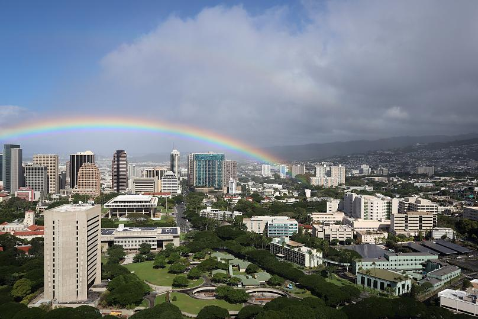
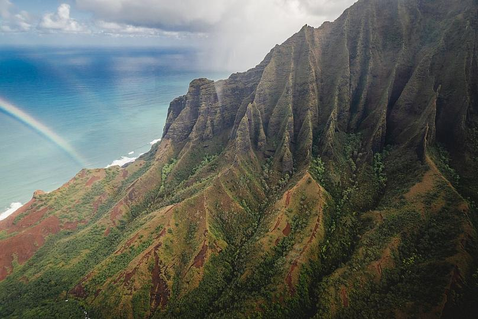

In a new publication, an atmospheric scientist has made a passionate case for why Hawaii is the best corner of the Earth to experience the magic and wonder of rainbows. "The cultural importance of rainbows is reflected in the Hawaiian language,” says author Steven Businger, atmospheric scientist at the University of Hawaii at Mānoa, “which has many words and phrases to describe the variety of manifestations in Hawaii."
The key ingredients for rainbows are rain and sunlight. To summarise the process in brief, light enters a
water droplet, reflects from the inside of said droplet, bends as it passes from air to the denser
water,
separates into component wavelengths which manifest as different colours and voila: a rainbow.
Hawaii's location in the subtropical Pacific means the overall weather pattern is dominated by trade
winds,
with frequent rain showers and clear skies between the showers - the perfect conditions for rainbow
formation.
In his paper, Businger outlines four additional factors affecting the prevalence of rainbows throughout the islands. "At night a warm sea surface heats the atmosphere from below, while radiation to space cools cloud tops, resulting in deeper rain showers in the morning that produce rainbows in time for breakfast," Businger explains. In addition to atmospheric factors, there are geographical ones too. Hawaii's mountains cause trade wind flow to be pushed up, forming clouds and producing rainfall. Without mountains, Hawaii would be a desert with a scant 17 inches annual rainfall. A third factor conducive to rainbow sightings is daytime heating, which drives island-scale circulations. During periods of lighter winds, showers form over the ridge crests over Oahu and Kauai in the afternoon, resulting in prolific rainbows as the sun sets. Due to the remoteness of the Hawaiian Islands, the air is exceptionally clean and free of pollution, continental dust, and pollen. This is the fourth factor that contributes to the numerous bright rainbows with the full spectrum of colors.
Hawaii is actually known as the rainbow state. In traditional mythology, rainbows are a significant element of the god-based stories the island was born from. Across the islands, rainbows are called aneune after the Goddess Aneune. Aneune used rainbows as a road between the heavens and the Earth, in her role as the messenger between man and the Gods. The rainbows were also roads for the dead to make their way to heaven. In Businger’s paper, he analyses how rainbows have become such a key part of Hawaiian culture.
There are a few points around Hawaii which are best placed for rainbow spotting.
Sometimes called ‘the gathering place’ and home to the state capital Honolulu, Oahu has been known to see multiple rainbows casting at one time, and even lunar rainbows, night rainbows which use light from the moon instead of the sun.
Kauai experiences more rain than the other islands, making it ideal for rainbow formations. Fishermen in these parts have reported seeing rainbows ascending from the sea.
Rainbows between the ocean and mountains are common in Hawaii